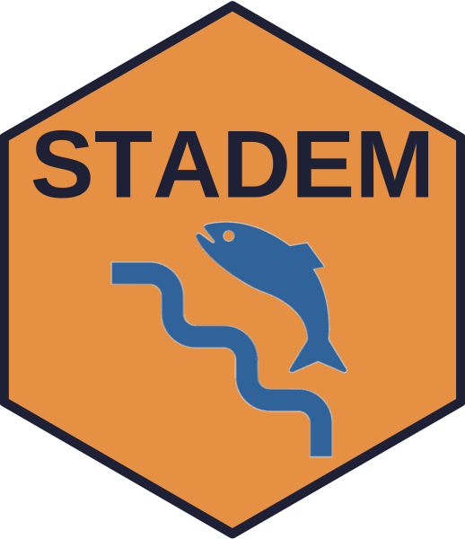

STADEM 
STate space Adult Dam Escapement Model
Description
The primary goal of this project is to estimate total adult escapement of spring/summer Chinook salmon and steelhead that cross Lower Granite dam (LGD). In addition, to meet desired management and research objectives, total escapement has to include estimates of uncertainty and be parsed into weekly strata by three origin groups; wild, hatchery and hatchery no-clip. To reach this goal, we have developed the STate space Adult Dam Escapement Model (STADEM) model that incorporates fish ladder window counts, data from sampled fish at the LGD adult trap, and observations of previously PIT tagged fish at LGD adult detection sites.
This package contains functions to query and summarise the necessary data to fit a STADEM model, as well as write the JAGS model and run it using the jagsUI package in R. Some of the functions can be applied to other dams, and we are actively working to be able to run STADEM at locations other than Lower Granite Dam.
The user can find more information related to installation and use of this package on the package website.
Further details about STADEM can be found in our published paper:
See, K.E., R.N. Kinzer and M.W. Ackerman (2021). State-Space Model to Estimate Salmon Escapement Using Multiple Data Sources. North American Journal of Fisheries Management https://doi.org/10.1002/nafm.10649
Installation instructions
STADEM requires several packages that are available through the tidyverse package. You can install all the necessary packages by using:
install.packages("tidyverse", "rjags", "jagsUI")The STADEM compendium can be downloaded as a zip from from this URL: https://github.com/KevinSee/STADEM/archive/master.zip
Or the user can install the compendium as an R package from GitHub by using Hadley Wickham’s devtools package:
# install and load remotes, if necessary
install.packages("devtools")
remotes::install_github("KevinSee/STADEM",
build_vignettes = TRUE)devtools may require the downloading and installation of Rtools. The latest version of Rtools can be found here.
For the latest development version:
remotes::install_github("KevinSee/STADEM@develop")STADEM requires the JAGS software (Just Another Gibbs Sampler). This can be downloaded here:
https://sourceforge.net/projects/mcmc-jags/files/
Please download version >= 4.0.0
Further instructions on how to use STADEM can be found in the package vignette, accessed by typing browseVignettes(package = 'STADEM')
Authors
STADEM is a collaborative project, with the primary contributors being:
- Kevin See (Biomark, Inc.)
- Ryan N. Kinzer (Nez Perce Tribe)
- Rick Orme (Nez Perce Tribe)
- Mike Ackerman (Biomark, Inc.)
Licenses
Text and figures : CC-BY-4.0
Code : See the DESCRIPTION file
Data : CC-0 attribution requested in reuse
Contributions
We welcome contributions from everyone. Before you get started, please see our contributor guidelines. Please note that this project is released with a Contributor Code of Conduct. By participating in this project you agree to abide by its terms.